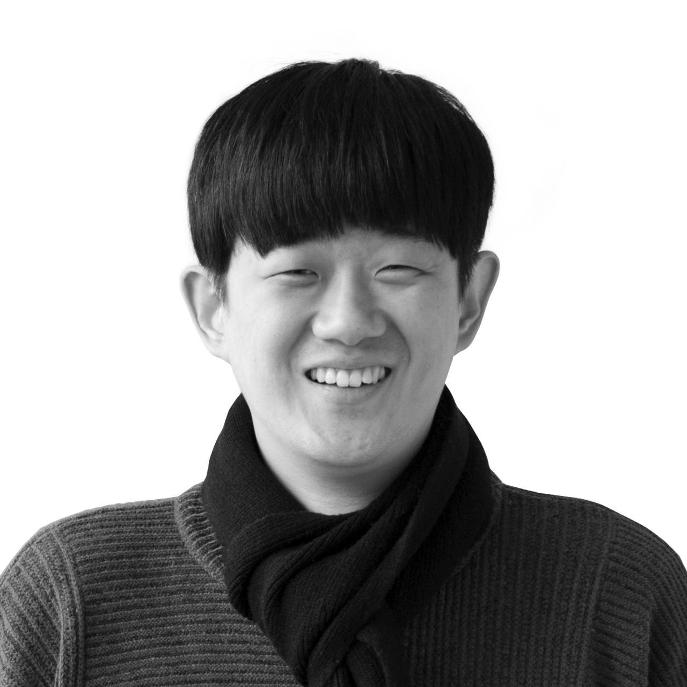

AI로 프로젝트를 기획하고 실행하는 사람. 개발 7년, 기획 4년.
| 생년월일 | 1988년생 (만 38세) |
|---|---|
| 연락처 | 010-5044-7485 |
| 이메일 | godvosi@gmail.com |
| 주소 | 서울 관악구 봉천동 |
| 포트폴리오 | pigle2.github.io/portfolio |
| 병역 | 군필 (의경 병장 제대, 2007.12 ~ 2009.11) |
| 자격증 | 운전면허 1종보통 |
백엔드 개발 7년, 서비스 기획 4년. IT 서비스의 설계부터 구축까지 경험했습니다.
현재는 AI를 활용하여 기획과 검증 업무를 수행하고 있으며, AI 에이전트를 활용한 프로젝트 진행이 가능합니다. 포트폴리오 사이트 자체가 이 방식으로 기획하고 개발한 결과물입니다.
개발자 시절 중고차 거래 플랫폼(첫차)의 핵심 서버를 구축했고, 이후 기획자로 전향하여 기술 실현 가능성을 사전에 판단하는 서비스 기획을 수행하고 있습니다.
| AI 프로젝트 실행 | AI 에이전트(Claude Code) 기반으로 기획, 개발, 교차 검증, QA까지 프로젝트 전 과정을 1인으로 수행 |
|---|---|
| 기술 이해 기반 기획 | 개발 경험을 바탕으로 기술 실현 가능성을 사전 판단. 개발팀과의 커뮤니케이션 효율 향상 |
| 0→1 서비스 기획 | 요구사항 분석부터 IA, 화면설계서, 서비스 정책까지 전 과정 기획 수행 |
| 크로스 펑셔널 | 개발, 디자인, 비즈니스 간 소통. 기획부터 QA까지 전 주기 PM 경험 |
2025.10 ~ 현재
2024.10 ~ 2025.04 | FinTech (증권 HTS/MTS/WTS)
2024.02 ~ 2024.08 | 중고차 O2O 플랫폼
2023.05 ~ 2023.10 | 블록체인 쇼핑몰
2022.04 ~ 2023.01 | 모바일 팬덤 커뮤니티 & 노래방 서비스
2021.06 ~ 2022.02 | SI/외부 프로젝트 PM
4인 팀에서 시작해 국내 주요 중고차 거래 플랫폼으로 성장
증권 거래 시스템 기획 — 핀테크 도메인 경험
출장/방문 진단 기능 0→1 설계
| 기획 도구 | Figma, Notion, NotebookLM, Stitch |
|---|---|
| AI 도구 | Claude Code, Codex, Cmux, GStack |
| 개발 (과거) | REST API, DB 설계 (MySQL), AWS, Git, Linux, PHP/Laravel |
| 기획 산출물 | 화면설계서, IA, 유저 플로우, QA 시나리오, WBS, 서비스 정책서, 요구사항 정의서 |
| 협업 | Slack, Jira |
| 2006.03 ~ 2011.02 | 경기공업대학 — 시각디자인 (졸업, GPA 3.5/4.5) |
|---|---|
| ~ 2006 | 상동고등학교 (졸업) |
| 보훈대상 여부 | 해당없음 |
|---|---|
| 취업보호대상 여부 | 해당없음 |
| 고용지원금대상 여부 | 해당없음 |
| 장애여부 | 해당없음 |
안녕하세요. 임상준입니다!
저는 백엔드 개발자로서 7년 정도 일을 해왔습니다. 개발팀을 이끌고 디자인, 기획, 운영 인력과의 커뮤니케이션을 통해 더 나은 서비스를 만들기 위한 많은 토론과 아이디어 도출 등에 참여해 원활하게 결과물을 만들어 내고, 일부 소통이 좀 어려운 개발부서와 타부서 또는 타부서 간의 소통 문제를 제가 앞서 나서서 해결한 경험이 저는 개발보다 더 적성에 맞는다고 생각이 들었습니다. 평소에 기획에 관심이 많았고, 제가 알고 있는 개발 지식으로 기획자분들에게 문제 해결의 도움이 되어 왔으며 직접 기획서 작성도 했었습니다. 그러다 최근 회사에서 경영의 어려움이 있었고 임금체불로 인해 퇴사를 하게 되었습니다.
한 번은 운영팀에서 문제가 있어 골머리를 앓고 계셔서 제가 이야기를 듣고 문제 해결에 제가 도움이 될 수 있을 것 같아 해결하였고 실제로 운영팀에 큰 업무 속도 개선이 되었습니다. 그 후로 많은 소통이 진행되었고 운영팀뿐만 아니고 디자인, 기획 부서에서도 고민이 있으면 저한테 먼저 말해주셨습니다. 개발팀에서는 조금의 업무가 추가되었긴 하지만 그 조금의 노력으로 사내의 매우 비효율적인 업무 프로세스를 개선하여 결과적으로 팀워크가 좋아졌으며 직원들 간의 갈등은 줄어들고 소통이 늘어 서로 돕는 것을 꺼려 하지 않는 분위기가 되었습니다. 간혹 개발자분들 중에 자신에게 업무가 추가될까 봐 모른 척하시는 경우가 있었으나 저는 그런 성향을 선호하지 않습니다.
취업을 준비하는 동안 아는 분에게 프리랜서로 프로젝트를 제안받아 제가 PM으로 팀원을 직접 꾸려 프로젝트를 진행하고 있습니다. 하지만 외주 업무보다는 직접 자사의 서비스를 맡아서 팀을 이끌고 싶다는 생각이 들어 지원을 하게 되었습니다.
개발팀 리더로 있을 때에는 개발 인력 채용과 실무 프로젝트 진행에 대한 책임을 지고 이끌어 왔었습니다.
성격은 유순한 편이며 즐겁게 일하려고 합니다. 업무를 진행할 때는 유연한 사고를 많이 하는 편이며 효율적이며 정확한 기획 의도 및 목표를 파악하여 작업에 들어갑니다. 타 부서와도 커뮤니케이션 능력이 좋아 협업과 회의를 통해 좋은 결과를 잘 만들어 냅니다.
취미를 이야기하자면
- 홈 트레이닝: 집에서 할 수 있는 가벼운 운동을 합니다
- 댄스: 라틴 소셜 댄스를 배우고 있습니다.
음주는 분위기를 깨지 않을 정도이며 술을 못하거나 하지는 않습니다. 흡연 여부는 전자담배를 피우고 있으나 금연하려 노력 중입니다.
회사와 같이 발전하여 좋은 기억을 공유하고 싶습니다!